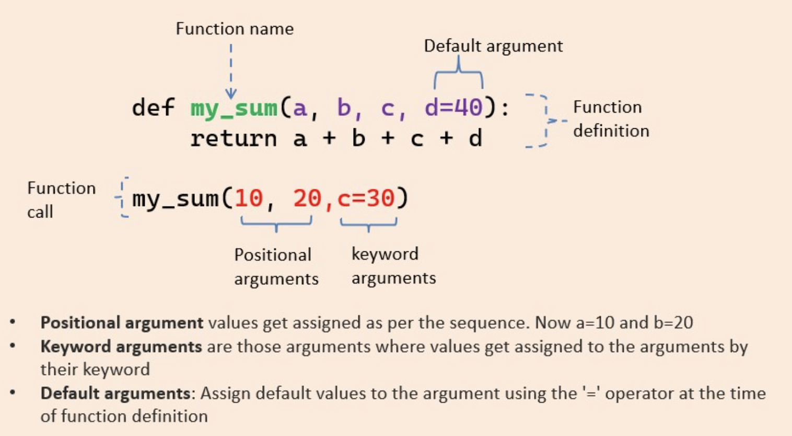

Python 不定长参数
Contents
1. 四种 argument 类型
Python 参数类型有四种:
- Default argument
- Keyword arguments (named arguments)
- Positional arguments
- Arbitrary arguments (variable-length arguments
*argsand**kwargs)
2. parameters vs arguments
首先分清 parameters 和 arguments 的区别:

3. Positional arguments vs Keyword arguments
Positional arguments 有点迷, 但也是我们最经常用的, 就是当我们调用函数不指定参数名, 如下面这个函数:
|
|
有很多种调用该函数的方法, 如最常见的 add(10, 20), 或者 add(lhs=10, rhs=20), 或者你还可以 add(10, rhs=20),
对于add(10, 20) 里面的10, 20 就是两个 Positional arguments,
对于 add(lhs=10, rhs=20), lhs=10 和 rhs=20就是两个 Keyword arguments,
对于 add(10, rhs=20), 10 是 Positional arguments, rhs=20 是 Keyword arguments,

4. Arbitrary positional arguments (*args)
We can pass multiple arguments to the function. Internally all these values are represented in the form of a tuple.
|
|
This function works, but it’s limited to only three arguments.
|
|
5. Arbitrary keyword arguments (**kwargs)
与 arbitrary positional arguments 不同, arbitrary keyword arguments 使用 dictionary 存储多个被传入的 keyword arguments,
|
|
输出:
|
|
看源码的时候学到一些技巧, 说一下, 这是部分代码:
|
|
上面代码 model = params.get("model", None) 的意思: It tries to retrieve the “model” key from the params dictionary, If that key exists, it uses that value, If that key does not exist, it uses the default value None.
对于 deployment_id = params.pop("deployment_id", None): Tries to retrieve the “deployment_id” key from the params dictionary, If it exists, it uses that value and also removes that key, If it does not exist, it uses the default value None.
另外, 可以看到此函数__prepare_create_request(), 前半部分是一些有默认值的参数, 后面因为一些不那么主要的参数直接写成了arbitrary keyword arguments, 然后最后在函数体里遍历查找, 这么写主要是为了更好的 Readability, 即用户看到这个函数 至少知道要传什么参数, 如果函数写成 def __prepare_create_request(cls, **params):, 那用户也不知道具体怎么调用了,
参考:
Author David
LastMod 2023-06-06